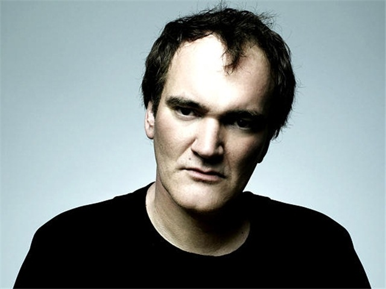

Режиссеры – одни из самых талантливых людей в мире. Именно благодаря ним, сейчас мы можем сесть перед телеэкраном и наслаждаться прекрасными фильмами, не думая о лишней суете.
Первое место в этом списке заслуженно занимает Стивен Спилберг , режиссер многих шедевральных кинолент, таких как «Список Шиндлера», «Поймай меня, если сможешь» и «Спасти рядового Райана». На 8-миллиметровую камеру отца в 11 лет, Стивен снял свой первый фильм, и кто бы мог подумать, что маленький мальчик будет награжден Орденом почетного легиона.
Второе место занял Квентин Тарантино. Режиссер, который предпочитает кровь и трэш. Один из самых ярких представителей постмодернизма. Лучшие работы знаменитого Квентина «Криминальное чтиво», «Бешеные псы» и, конечно же «Бесславные ублюдки», а также из последних работ «Джанго освобожденный». В молодости Квентин работал в пункте видеопроката.
Следующий талантливый режиссер Кристофер Нолан и он занимает третье место. Его уникальность и эпохальные фильмы не могут оставить зрителя равнодушными. В 7 лет он посмотрел фильм «Звёздные Войны». Тогда же начал сочинять сценарии для малометражных научно-фантастических фильмов. «Престиж», «Интерстеллар». Каждая его работа заслужила награду от кинозрителей.

Режиссер, снявший два самых кассовых фильма в истории кинематографа, Джеймс Кэмерон. Всеми любимый «Титаник», «Терминатор», «Аватар» и множество других фильмов. Он получил три Оскара, что уже говорит о его профессионализме и полной отдаче своей любимой работе. Первый режиссер, у которого получилось заработать бюджеты в 100 и выше миллионов, был Кэмерон.
А завершает этот топ-5 лучших режиссеров Тим Бертон. Однозначно, этот список был бы без него не завершен. С самой юности Тим увлекался фильмами и мечтал управлять кино. Что ж, у него это вышло, лучшие фильмы «Крупная рыба», «Сонная Лощина» и «Эдвард руки-ножницы».